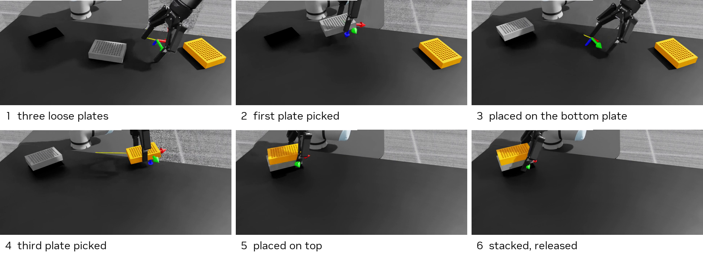
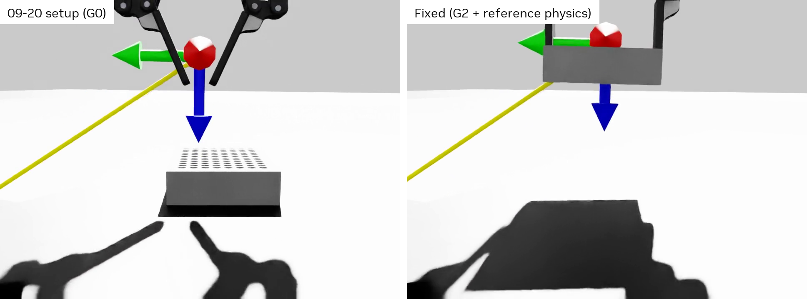
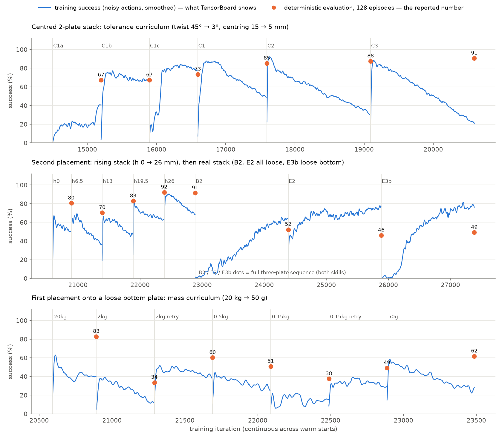
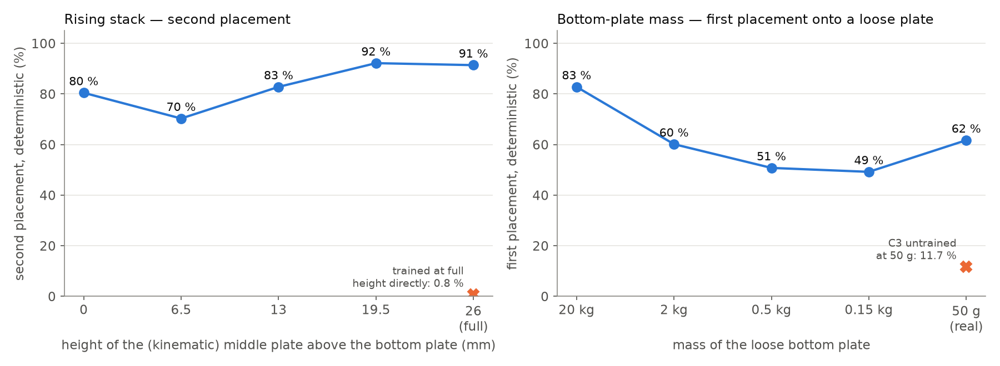
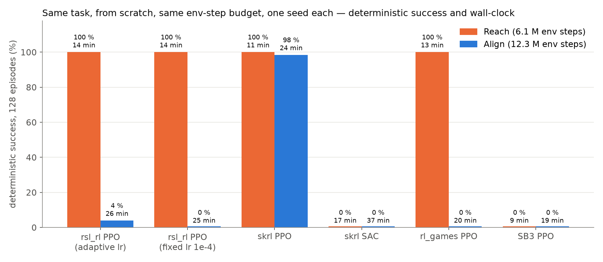

Seven parts, same order as wellplate-rl-lessons.md:
Each part: the idea · what happened here · where in the code · check yourself.
The loop that produced every step:
Every turn of this loop is written down in PROGRESS.md.
f(env, **params) → tensor(num_envs, …), listed in a config class. A new stage = a config subclass.mover / base / lower in the scene; every "plate" remapped to "mover".tasks/manager_based/wellplate/: scene.py, base_env_cfg.py, *_env_cfg.py, mdp/, agents/.
Implicit PD drives are springs toward a target. With gravity and no compensation, the spring needs an error to hold the arm up — and relative IK starts the next step from the sagged pose.
Fix: every physics step add G(q) — the torques that hold the robot at configuration q — from PhysX inverse dynamics, as a feed-forward effort.
| Arm | IK error after 300 steps |
|---|---|
| gravity off | 0.0 mm |
| gravity on | 434 mm |
| gravity on + G(q) | 0.0 mm |
Consequence: policies trained with gravity off transferred unchanged (E4 54.7 %). Code: mdp/gravity_comp.py.
(x − mean) / (std + 0.01). An input that never varied has std ≈ 0 → a new value is huge. A 180°-flipped plate (same plate!) became a ~100σ input. Canonicalise symmetric quantities.weight × value × 1/30 s. A bonus of weight 50 pays 1.7.Also: actions are clipped to ±1, so a wide action std is "free" — it grew 1.0 → 3.7 and randomly opened the binary gripper → entropy 0.01 → 0.001.
V(s′) ≈ V(s) and rhold ≈ rrelease, so the preference for releasing is ≈ the bonus. PPO only sees it if it stands out from the advantage noise.
| Bonus weight | Paid once | Critic error (value loss 25–48) | C1a deterministic |
|---|---|---|---|
| 50 | 1.7 | ± 5–7 | 1.6 % |
| 600 | 20 | ± 5–7 | 67.2 % |

--diag_stack): "placed but held", "never picked up", "released askew".E1 run 2 destroyed the 2-plate skill (90.6 % → 0.8 %). Weights or input normaliser?
| C3 normaliser | new normaliser | |
|---|---|---|
| C3 weights | 90.6 % | 93.0 % |
| new weights | 3.9 % | 0.8 % |
→ the weights were overwritten; the normaliser was innocent. Tool: scripts/swap_normalizer.py.
Same spirit: --track_switch showed the placed plate moving > 5 mm within 0.17 s of the hand-off in 61 % of envs — one measurement that located the E1 blocker.

| Knob | Steps |
|---|---|
| twist tolerance | 45° → 3° |
| stack height (kinematic) | 0 → 26 mm |
| bottom-plate mass | 20 kg → 50 g |
A kinematic plate inside another is physically impossible — fine for shaping, never for the numbers that count (all gates used real dynamic plates).

eval_common.py).eval_policy.py --diag_stack on a checkpoint and read the per-episode table.centered_env_cfg.py and predict the effect before running.wellplate-rl-lessons.md (answers at the end).reports/wellplate-round-2026-09-28.md